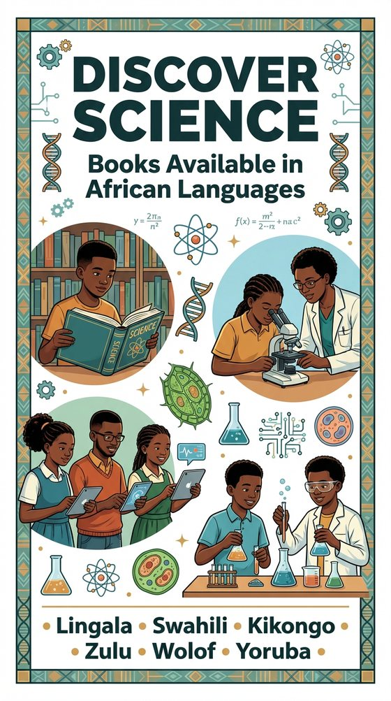
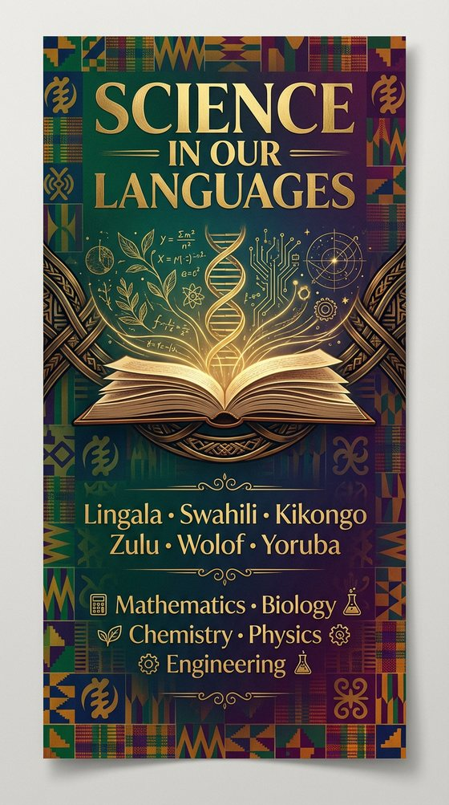
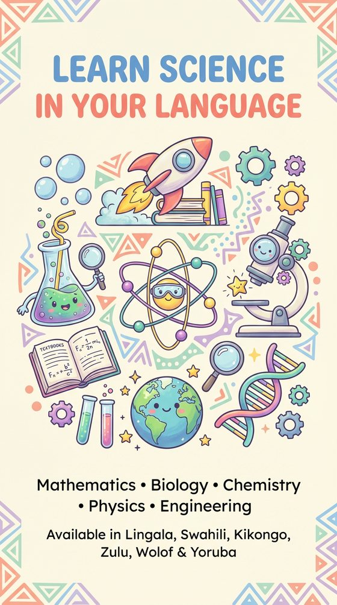

Catalogue
Toutes les publications de la maison.
Called to Stand Beside HimLessa Annette Kuedituka · Anglais La Chrétienté à l’ère de l’Intelligence ArtificielleStephane Taty · Français
La Chrétienté à l’ère de l’Intelligence ArtificielleStephane Taty · Français Biblical Business and Entrepreneurship ModelStephane Taty · Anglais
Biblical Business and Entrepreneurship ModelStephane Taty · Anglais Biblical Politics and Leadership PrinciplesStephane Taty · AnglaisLes Types des personnes qu’on rencontreSyntiche Ndeo Okamba · Français
Biblical Politics and Leadership PrinciplesStephane Taty · AnglaisLes Types des personnes qu’on rencontreSyntiche Ndeo Okamba · Français
La Chrétienté à l’ère de l’Intelligence ArtificielleStephane Taty · FrançaisBiblical Business and Entrepreneurship ModelStephane Taty · AnglaisBiblical Politics and Leadership PrinciplesStephane Taty · AnglaisLes Types des personnes qu’on rencontreSyntiche Ndeo Okamba · FrançaisAucun livre ne correspond à votre recherche.
Programme éditorial — Science dans nos langues



Disciplines
MathématiquesBiologieChimiePhysiqueIngénierie
Langues
LingalaSwahiliKikongoZuluWolofYoruba
Titres et disponibilité par langue : sur demande.